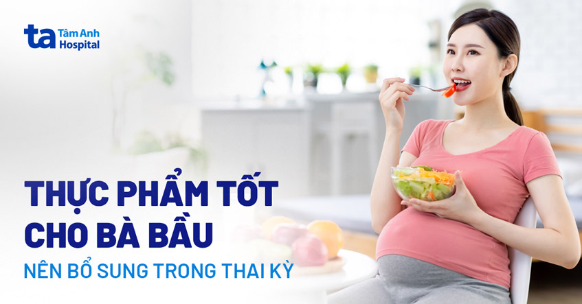

TOP 12 THỰC PHẨM TỐT CHO BÀ BẦU, MẸ MANG THAI NÊN ĂN MỖI TUẦN
Có bầu nên ăn gì là mối quan tâm hàng đầu của các mẹ bầu bởi chế độ dinh dưỡng khoa học không chỉ giúp mẹ khỏe mạnh, mà còn giúp thai nhi nạp đủ những dưỡng chất cần thiết để phát triển trong suốt thai kỳ. Trong bài viết dưới đây, CNDD Nguyễn Thị Quỳnh, Khoa Dinh dưỡng Bệnh viện Đa khoa Tâm Anh Hà Nội chia sẻ 12 thực phẩm tốt cho bà bầu mà mẹ nên bổ sung vào chế độ ăn hàng ngày.
Một số lưu ý về chế độ dinh dưỡng cho mẹ bầu
Chế độ ăn uống trong thai kỳ giữ vai trò vô cùng quan trọng, không chỉ đối với sức khỏe của mẹ mà còn đảm bảo sự phát triển toàn diện của thai nhi. CNDD Nguyễn Thị Quỳnh chia sẻ, việc cung cấp đầy đủ dinh dưỡng khi mang thai giúp cơ thể mẹ đáp ứng được các hoạt động sinh hoạt hàng ngày, cũng như những thay đổi trong chuyển hóa, tăng khối lượng cơ thể, khối lượng tử cung và thai nhi. (1) Ngoài ra, nguồn sữa mẹ cũng sẽ được chuẩn bị sẵn sàng từ chế độ ăn của mẹ khi mang thai. Thế nhưng, không ít các mẹ bầu nhất là những người “tập đầu” khá lúng túng không biết thực phẩm nào tốt cho sức khỏe và thực phẩm nào không phù hợp. Theo CNDD Nguyễn Thị Quỳnh, có thể trước khi mang thai mẹ đã áp dụng chế độ ăn uống lành mạnh, nhưng khi mang thai nhu cầu dinh dưỡng sẽ cao hơn mức bình thường. Nhìn chung, mẹ cần đảm bảo nguyên tắc chọn thực phẩm tươi, sạch, an toàn và đảm bảo đủ 4 nhóm chất sau:
+ Chất bột đường (Glucid): gồm gạo, khoai, ngô, mì…;
+ Chất đạm (Protein): gồm thịt, cá, tôm, cua, trứng, sữa và các chế phẩm từ sữa…;
+ Chất béo: gồm dầu, mỡ, lạc, vừng…;
+ Vitamin, khoáng chất và chất xơ: gồm các loại rau củ và trái cây.
Mẹ cũng cần đảm bảo bổ sung đầy đủ các dưỡng chất thiết yếu không thể thiếu trong quá trình mang thai, gồm:
+ Canxi: tăng cường 1000 – 12000mg canxi mỗi ngày để phát triển xương và răng cho bé, đồng thời ngăn ngừa loãng xương ở mẹ. Mẹ có thể bổ sung canxi từ các loại hải sản, sữa và các chế phẩm từ sữa.
+ Acid folic: đặc biệt quan trọng đối với hệ thần kinh và giúp ngăn ngừa dị tật ống thần kinh ở bé. Acid folic có nhiều trong các loại rau có màu xanh thẫm như cải xoăn, súp lơ, măng tây, rau dền, đậu bắp…; hay các loại đậu đỗ như đậu Hà Lan, đậu nành…; hoặc trong các loại trái cây như quả bơ, đu đủ, cam, quýt…
+ Omega-3: quan trọng đối với sự phát triển trí não của bé. Dưỡng chất này có nhiều trong dầu oliu, cá hồi, hạnh nhân, việt quất…
+ Sắt: tham gia vào quá trình tạo máu và vận chuyển oxy, đồng thời ngăn ngừa tình trạng thiếu máu do thiếu sắt ở mẹ bầu. Bà bầu cần tăng cường bổ sung sắt từ thịt bò hoặc các loại thịt đỏ, lòng đỏ trứng gà, các loại đậu đỗ…
+ Kẽm: hỗ trợ tăng cường đề kháng miễn dịch, giúp phân chia tế bào nhất là giai đoạn bào thai, trẻ nhỏ. Kẽm có nhiều trong các loại hải sản vỏ cứng (hàu, tôm, sò…), thịt, trứng, các loại hạt và ngũ cốc, nấm, rau xanh thẫm…
+ I-ốt: dưỡng chất quan trọng giúp bé phát triển và hoàn thiện não bộ.
+ Nước: cung cấp nước cho cơ thể, đảm bảo lượng nước ối bao quanh thai nhi, giảm nguy cơ nhiễm trùng đường tiết niệu, giúp chuyển hóa và hấp thu các vitamin tan trong nước (nhóm B, C…), đồng thời ngăn ngừa tình trạng táo bón. Nhu cầu trung bình từ 1,5-2,5 lít nước/ngày.